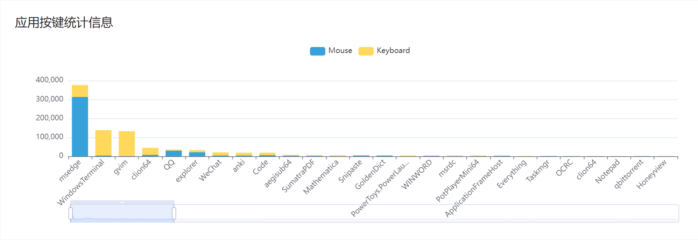

2023-11-23 杂记
撰因
上一篇杂记在 10 月 28 日，然后就是连续 7 篇笔记，11 月至今生产了 6 篇笔记，但是却一直没有一篇杂记抑或是随记来讲讲我最近的动向，而且搞得我好像很勤奋一样。因此，有必要在 11 月结束之前来一篇杂记。
为什么会有这么多笔记呢？一个原因就是写笔记的时间变多了（如现在的马原课上、通识课、微积分课，我也终于放弃了挣扎，还是染淤泥了）。还有一个非常重要的原因便是我这个月没干啥事，好像没啥可说的。
然后呢又本来打算昨天今天下午写的，但终究是拖延得没时间写。不过昨天想到了挺多可写的，于是还是没放在记事板，写篇杂记。顺便中断 7 篇笔记的进程，又由于没啥比较突出的主题，因此名称就叫 interruption。
摆记
可喜可贺的是，14 号我就完成了所有摆记的录入，包括之前提到的 16 篇周记性摆记（包括 3 篇未正式纪录在本子的），以及 5 篇主题性摆记（也称为周测性摆记，因为都是高三下学期周测时，写完卷子又不想检查试卷时，用没用过的草稿纸写的东西，除了数学考试没写外，其它每科都写过一点）。
同时在完成周测性摆记的录入时，还进行了其时间的考证，因为周测性摆记我并没有像周记性摆记一样清晰地记录时间。于是在某个摆烂的下午与晚上，我就根据摆记内容与其它的摆记的犄角旮旯，寻遍蛛丝马迹，为每篇周测性摆记找到了撰写的日期。
不得不说 OCRC 真是帮了大忙，要是还是像一开始那样用语音输入然后校对修正，不知道要弄到什么时候。而且 OCRC 录入不需要在宿舍没人时进行，不会浪费太多时间。大部分内容都是采用 OCRC 手写文字识别，然后手动校对修正，准确率与我字迹有关，不高，但够用了。反正至少省去了基础录入的时间。因此修正按的最多的键便是 L。完工后我还看了一下第一篇录入，也是最长的一篇的摆记，居然发现了许多录入错误，包括但不限于录错字、录错标点，只不过我也并不想再度开启一个审查过程，而且审查费力得多，就先这样吧。
虽然我的书写很糟糕，但是几乎全部的字我还是辨识出来了并完成了录入。可惜的是目前有两个字我认不出来，即使结合上下文也没想明白是哪两个字，截图放在这里，要是未来辨识出来，可以鞭尸一下我潦草的书写。
于是我猜测是 ?? 的原因

前后文出于隐私原因无法在公博给出（其实也没那么隐私）。目前只能大概猜出来第一个字是单人旁，可能是「位」。第二个字比较像「的」或「故」，只不过「的」倒不太像是我会的写法。
Anki
虽然这个月也挺摆烂的，不过值得庆贺的是，终于开始背 Anki 了，目前已经持续了两周多了。
不记得之前的博文有没有提到过，我有个仓库，目前放了南大的 ABC 三级词表。
AB 级词表我找到的源带有中文，只是没有词性，因此我背时就顺便补了词性。而 C 级词我找到的源没有中文，补此词性还算容易，但是补释义就麻烦多了。因此我用网上找到的脚本弄了不背单词的释义。
而近期我背的时候，发现似乎有挺多的重复卡片，前几天仔细一查，不得了，居然有数百张重复卡片，看来是脚本的副作用。而总数相同，这说明肯定有少录入。但我也不想麻烦了，反正是 C 级词。现在就只是删掉了这种重复卡片，有一些是别的级别或者是自己加的词汇重复，这些就没删。
另外我还发现，这个仓库居然莫名其妙有一个 star 了。本来我还蛮激动的，估计是校友什么的。然后我看了一下，这个人似乎。。。唉我也不太好说，只能希望 Ta 是误点的，而且还是尽快取消吧。被这种人 star 不如没有 star。
我非常恶心拿 GitHub 搞黄色、搞政治（如 C** 就是臭名昭著的，知乎也看到有人被恶心到）的人。
MacroHard
说到 OJ，那就一定要喷一下微软了。
效率模式
这段时间，OJ 看别人的代码极其卡顿，我一直不知道是什么原因，因为之前一直是好的。
直到我前阵子，在任务管理器关掉了几个 Edge 的效率模式，并把其优先级调回正常，然后就流畅了。
离谱的是，我即使连着电源，电脑满电，它还是会给我自动打开这个所谓的效率模式，然后降优先级。
同时，即使我关掉了效率模式，调高了优先级，很快它又会自动调低优先级。
我查了一下，似乎没发现能一劳永逸关掉的方法。目前唯一的方法便是在任务管理器，一个一个地调优先级。在任务管理器调优先级，会弹出提示框说会关闭效率模式，也是费劲，因此我就想用 AutoHotkey 来给调优先级一个热键。
可惜的是我测试了一下，不同页面的 PID 似乎是不同的，调某一个优先级似乎不会影响其它，而 AutoHotkey 获取的 PID 从始至终都是一个值，因此就没法做到了。
我也装了下 Chrome 试试，果然也是一样的。
我只能说真是自大且恶心的设计。
Windows 资源管理器
前几天看到一个方法，说是能加速 Windows 资源管理器速度，即用 F11 全屏进入再退出，然后资源管理器就会变快。
我试了一下，变快没发现，倒是有个 Bug：全屏后再退出后，即使改变目录，地址栏都不会改变。
新版的资源管理器好看是挺好看的，但是也有一些恶心的地方。之最我觉得要数，有时候改地址栏，它就僵住了，必须点击它的下拉菜单，进入别的目录才能恢复原来的样子。
Windows11 这真是靠 bug 活着啊。
OneDrive
晚上回宿舍，闲着没事打开 OneDrive 设置，无需多言。。。
两个都是如此，重启 OneDrive 没用。也许明天就好了呢。
11 月 27 日晨更新
改了系统语言为英文，好了。但由于系统语言是英语时中文显示很怪，改回来了，然后又乱码了。
PrintScreen
前两天晚上开了下 showKeyBoard 的显示按键功能，发现 PrintScreen 不会显示，同时突然发现不能用了（我用脚本 PrintScreen 绑定了 Snipaste 的截图，因为软件绑定抢不过系统），当天早上还能用的。一开始我以为是脚本的问题，关掉后还是有这个问题。然后还关掉了可能有一些关联的软件，如 showKeyBoard, ImTip 等，都无效。重启电脑后我惊喜的发现，连 Shift + PrintScreen（用脚本绑定了 Snipaste 的贴图，重启前可用）都不可用了。而今天早上微积分课，又可以用了。
showKeyBoard
从上次提到 showKeyBoard，到现在，showKeyBoard 又进步了许多。目前已经基本实现了我的需求。
我也为其写了一下英文 README，主体是 Copilot 翻译，然后我稍作修改。
由于现在课上我想不到啥可以新写的，于是不妨来看看我的按键统计数据。有记录的正好是 10 月 21 日到 11 月 22 日，正好一个月。
首先是键盘热力图，这算是目前还比较遗憾的一件事，就是区分度还不够高。这点是 WhatPulse 做得比较好的。
从主键盘来看，非常明显的 Vim 用户的特征。
| 键 | 次数 |
|---|---|
| H | 15115 |
| J | 34067 |
| K | 27435 |
| L | 34275 |
居然是 L 略胜一筹，估计是这段时间摆记录入的功劳。
这四个键按这么多次，也侧面反映了我移动的低效性，JJJ 一直按，按个爽。
剩下几个颜色深红的键，也列出来看看
| 键 | 次数 |
|---|---|
| LShift | 25288 |
| LControl | 23937 |
| Space | 21539 |
| BackSpace | 20498 |
这四个键，也是我用 WhatPulse 时的「四巨头」。可喜可贺的是现在它们比四个移动键按得少，侧面反映了我 Vim 使用频率的提高。
同时 BackSpace 在当时似乎排名更高，这也说明了我错误击键次数有所减少。
接下来是鼠标相关数据
| 键 | 次数 |
|---|---|
| 左键 | 153597 |
| 右键 | 8023 |
| 中键 | 124 |
| 下滚轮 | 305358 |
| 上滚轮 | 89672 |
悲，看得出来摆烂的频率和次数都很高。

应用按键统计信息。Edge 是绝对的大户，鼠标次数之多，让后面难以望其项背，客观地反映了我摆烂的情况。
新星 Windows Terminal 迅速崛起，并在键盘次数已经击败了 gVim，现在已经可期了。
CLion 倒是比我想象得要多一点，居然能有前二者的 1/4 左右，也证明了最近一个月没怎么写东西。另一个印证便是 VSCode 的萎靡不振，甚至被微信、Anki 之流击败。
接下来是组合键的数据，Ctrl + S 遥遥领先呐，笑。即使在 Vim，我也映射了 Ctrl + S 为保存键，写笔记时停顿时就按几下 Ctrl + S。
CV 工程师自然少不了 Ctrl + C/V。
Ctrl + F 一般来说是查找，然而仅靠查找显然是不能坐上第三名的宝座的。在 Vim 里我为它映射了向下翻半页（Ctrl + D，原功能是翻整页），因此才用了这么多。
vkE7 是个虚拟按键，我目前还没查到这个按键是什么，这个键次数也是真的高。
Ctrl + A 倒是比我想象得高，全选用得我感觉不算多，Vim 里用来增加数字，也没有很常用的样子。
Shift + A 估计是用来在行尾添加内容用的，不过也比想象的高。
Ctrl + W 用来关闭窗口，刚刚打出这个键时没有第一时间想到是用来干啥的。
Ctrl + B 在 Vim 用来向上翻半页。
Shift + 9，也就是括号，常用，不必多说。
Shift + Q 很多，只不过其实应该是 Space + Shift + Q，在 Vim 里我映射用来不保存退出，只不过 showKeyBoard 无法识别 Space 作为前缀键（Leader 键），因此显示为 Shift + Q。
Alt + Q 是 Alt 组合键第一，用来打开 Vim。
Shift + Space 不知道是啥，也许也是 Space + Shift + ? 的余孽。
Ctrl + Tab 倒是没想到这么多，用来终端切换窗口。
剩下的似乎没啥好说的了，还没写完的内容就明天再谈吧。
这个图没啥好说的。
L 比较多的应该就是在录入摆记。
下面的应用操作的数据从 10 月 29 开始，因为之前还没有这个统计功能。
Edge 凭借鼠标次数优势，时常占据榜首。只有少数时 gVim 与 Windows Terminal 能够超越。还有一次差点给 CLion 超越了。
没啥好说的，Edge 碾压式领先。
键盘操作基本是 gVim 与 Windows Terminal 的天下，CLion 也偶尔能取得榜首。
字幕
之前提到物理视频，也在前段时间完成了字幕的制作。
使用了 Aegisub，由于不想安装，就装在了沙盒里。
分两次制作，第一次给了前半部分，5 分钟左右，第二部分给了完整的 900M 左右的 mp4 文件，时长共计 15min 左右。
以前没打过轴。一开始用 PotPlayer 看视频，字幕有时候会错一点时间，就用快捷键平移 0.几秒。
只不过这样的调整只是暂时的，以后要看还是不舒服，就了解了一下 Aegisub 平移时间轴。当然实际上用 Aegisub 是为了将部分字幕的特效字幕复制到没有特效字幕的字幕里，同时修正一个字幕里很严重的时间错位，至于上一段提到的字幕，由于影响不大，再加上调整麻烦、我很大程度不会再看了，就没有进行调整。
这一次制作字幕，也算是一个学习的过程，对于打轴我也算是有了一点心得体会。
总的来说打轴不是什么技术活，纯粹的体力活，没有什么技术含量。
我打轴大致的流程是这样的：
- 找声音波形图大致的开始结束的地方
- 用鼠标选中这一段
- 空格播放，确定大致范围
- 左右微调，用空格键重播，抑或是只放最后半秒
话说第二次调轴微调我忘记了微调还有快捷键，全程鼠标微调，难怪累死了。
第一次耗时 1h 左右，第二次大概耗时不到 2h ？这样看的话，大概 1min 的视频打轴加复制字幕时间是 10min，这还是在我已经把大部分台词拆解成字幕形式的情况下。
另外第一次时很多台词我都是一个两句（逗号分隔）形式的，因为我懒得拆成两个字幕了。只不过第二次就拆开了，也可能是因此加大了工作量。
由于录制时用了笔记本和手机，而且不同人说话音量也有差异，因此播放时有一些音量非常低，要把声音调大才听得清，有一些则很响亮，震耳欲聋。
还有一点便是，部分演员的台词断句非常的奇怪啊，在逗号分隔处应该断句时是快速读过去的，导致很难划分字幕，于是这两句字幕是紧密相连的（仅仅间隔几十毫秒）。这么着急干什么。
还有一点便是改台词，这点无可厚非，毕竟这么抽象的台词怎么记得住，改一点亦无妨。而我一开始想的是管他怎么读，我就按剧本的台词弄。结果实际做时感觉太尴尬了，还是按演员念的改吧，除了一些省略了很多内容的，我才用括号补一些遗失的内容。
字幕字体用的是微软雅黑，不知道有啥合适的字体，微软雅黑也看得蛮舒服的，就这个吧。唯一的「特效」是正在说话（除了旁白）的人的名字是粗体。
本来是打算把 ass 字幕发给组长，让他用他的 Pr 什么的合并一下（总不能用外挂字幕吧）。只不过交流了一下，搜索了一下才发现 Pr 似乎合并 ass 字幕挺麻烦的？
然后组长弄完后期发了 mp4（第一部分发的是 avi，分辨率也不如完成版，但也很大），我就想用 FFmpeg 合并一下字幕，毕竟这又不是没做过。
然后搜索了一下，用
ffmpeg -i 1.mp4 -vf ass=1.ass 2.mp4 |
合并了。结果体积缩小了，只有 100+M 了。于是我又搜索了一下，弄了个 2G 的版本。
ffmpeg -i 1.mp4 -vf ass=1.ass -crf 0 3.mp4 |
最后选择的是第一个版本。
这个物理视频又当演员，又当摄影师，又当后期字幕，我也能理直气壮地说我贡献蛮大的，我可没摆烂。比较好的是虽然出演当演员，但所有演员的头都有遮挡，我也不会感觉很尴尬了。
然后英语也有个视频期末作业，遗憾的是我由于不定期清空聊天记录，导致无法进入分组页面。倒也无妨，等最后哪个组愿意收留我便去罢。
物理课
昨晚上完一周的最后三个小时——物理课。
老师在讲完 2/3 内容时，停下来问我们对物理课有什么看法、见解。
点了几个人，大概都是说感觉进度太快了。
老师又问大家一周花在物理的时间有多少，有人在下面说三个小时，就是现在这三个小时，哄堂大笑。其实有点夸张，毕竟课后写作业也是要时间的。
老师就请他发表了他的见解。他的见解我算是比较认同的，因此我就来发表下我的见解。
跟那位同学一样，我对物理还算是有兴趣的，在高中的六科里，我的喜恶程度大致是数学 > 物理 > 化学 ≈ 生物 > 语文 ≈ 英语。然而也非常遗憾的是，大学以来的这些物理课，算是在不断消磨我对物理的热情。
首先是上课快的问题。这个问题比较笼统，但是也有其他同学对这个问题进行了阐释。新概念实在是太多了，三节物理课要讲完一章可能有十节的内容。常常是看到后边的推导，里面出现一堆拉丁字母、希腊字母，已经忘记了它的含义，然后此时一个又一个新概念的轰炸，更是茫然无措。
对比高中，一节课也就将那么几节，课上有详细的阐述，配套的习题，课后也有针对性的练习，熟悉新的概念，这样一来，即使我不复习不预习，在下节课学新东西我至少也知道这是个什么。但现在物理课真的像是在听天书一样。
当然，我并不是说大学的课程应该像高中那样嚼烂了再喂给你吃。大学课程时间紧凑，要学习的内容多而杂，显然像高中那样是不现实的。但是呢，初入大学，还是很难适应这样的学习模式的。
还有便是高中大学的衔接不够。一开始就狂轰滥炸微积分知识。然而实际上，高中的物理课上虽然老师会讲解微元法之类的知识，但教材上估计不会有很长的篇幅进行介绍。我敢肯定许多人对微元法是一知半解。而相当一部分学生没接触过微积分，一上来就是一堆积分符号 、微分符号 ，虽然老师反复安慰这些微积分「很简单」「不用看」「学到后就懂了」，虽然这些微积分的计算确实很简单，但是对于没有基础的人来说还是相当劝退。就像我有一部分微积分的基础，但在讲分析力学时什么全微分、变分一些我不熟悉的概念，我也是一头雾水：全微分时怎么就可以这样了？ 是啥，和 又有啥区别，为啥运算时可以互换？
以及在习题部分，老师过得很快，说的最多的便是这题很简单。老师反复说不用看计算，我也确实没在看计算，我在看思路，然而由于前面基础不牢，还是来不及思考，便匆匆过去了。
再从功利的角度上看，我首先对物理的兴趣并不是说可以让我全神贯注地去学习的，排在前面的还有编程与数学呢。
再者，课程组选课里我比较倾向的智软和智科物理只占 10%，CPL 占了足足 40%，剩下的微积分和线代各占 25%，而且按学分数，也是最少的，性价比着实不高。
同时，大一下智软和智科的课程组都没有物理了，只有集电要学物理，就连数经都不用，就更让人提不起兴致去学物理了。加上智软智科本来就比集电热门，集电据学长学姐所言是「点击即送」，想来也不是什么热门。因此对于大部分人来说，与其去学物理，不如去学 CPL，进智软和智科，不是更实惠？
期中考试时，开卷考，可以带手机，但「要调到飞行模式」。手机都能带，更别提啥书籍什么的了。考了一道分析力学的用拉格朗日方程推到牛顿运动学定理的题目。老师很早就发过拉格朗日方程推导各种牛顿运动学定理的过程，许多人包括我，都估计是直接照抄了事，甚至不知道自己在写些什么。这让我感觉其实蛮悲哀的，这样的考试有什么意义吗，写对了的人真的就懂，真的就会吗？肯定是有懂，有会的人，但我想不会是大多数。
当然也许只是我井底之蛙，其实大部分人都没有我这样的苦恼。我自以为的估计只有学过竞赛的人才能跟上的内容，其实对大部分人来说并不是那么困难。但我也只是提出了我面临的困境，尽管我没什么好的解决方案，也许我唯一能选择的就是期末尽量别挂科了，然后其他三门学好一点，早日脱离物理的苦海吧。
真的很可惜，我是真的想在物理课上学到点内容的，但是目前看来我的物理水平甚至不如高三，毕竟高三我还能熟练记忆各种公式，而现在看到一些熟悉的概念我还要慢半拍才反应过来。而现在看来，正如那位同学所说，像是在浪费时间一样。也就难怪有那么多人不去听物理课了。以这样的方式与物理告别，真的很遗憾。
阳光跑步
上上节体育课才知道，阳光跑步截止时间是 12.8，而当时我才跑了 6 次。
虽然说规划了每周跑周六日两次，但由于各种原因，少跑了两次。但我仔细一算，54 天跑 16 次，这一周跑两次也不够哇。
于是我想着，既然你不仁，那我便不义了。要是还按以前的方式，即使加上上午没课的周三，那也不够。于是我就把没早八的天都拿去跑步了。
并开启了走步模式：早上吃完饭从食堂走到操场，大概 800m，配速八分半。要求的配速是八分钟。然后绕操场走路，走到 2km 左右，最后冲刺个 3/400m，就能把配速压进八分钟了。
然而昨天早上走过去不知道为啥配速到九分半了，导致冲刺一次才到八分半。只能暂停休息一会再冲刺一次。也许就是这样让我的脑子出现了损伤，昨天一天没干啥事，连这篇杂记也没继续写，而是拖到周六（开始找借口了）。
而今早试了下骑单车，来南京第一次骑单车。周六上午八点多钟，人还不多，骑着蛮爽的。我骑得也不快，加上挺久没骑了，有点生疏。最后完成了今日的跑步。这下是更加轻松了。
当然肯定有人指责我，阳光跑步是你自己的事，应付交差也是你自己承担后果。我当然知道如此，其实若是阳光跑步截止日期能到学期末，我兴许就能坚持按要求跑了。只不过时间有限，再加上实在是痛苦，骑行、漫步其实也有益身体健康，让一直宅在宿舍的我有机会出来走走，呼吸新鲜空气，也算达到了目标了（当然，归根究底是我太懒了）。
此外，这周三跑步冲刺前，去练了两下引体，第一次 11 个，第二次 8 个。果然颓废太久了，下周就体测了，抱佛脚有点晚了。然后昨天（周五）想再练练，手臂剧痛，练不了，只好放弃，到时候能做几个算几个吧，也估计是初三后唯一一次拿不了满分了。
想到初中时下午放学，便在杆子那边，借练引体唠嗑，玩耍。那时有练习引体，但更多的是嬉笑打闹。真是想念啊。不知道以后有没有个机会回去看看，之前有几次机会都遗憾失去了，而现在与初中同学的联系也越来越少了。
冷
最近又降温了。看深圳那边气温还是 20+℃，真是羡慕。
深圳的冬天，一般我是穿个校服裤，外套个校服外套，就足以御寒了。
而南京的冬天，是我双手的青紫，是食堂外洗手刺骨的痛，是被窝里缩成一个球的自抱自凄。
在深圳过冬的装备，是断然撑不过南京的冬天的。只不过我已不记得我有多少年没穿过羽绒服了，高中三年都没啥印象，但小时候是肯定有的。气候变暖效果显著啊。
我理想的天气是什么？我昨天想了一下，大概是可以穿着短袖，有风吹过来不会觉得冷，只会感觉很舒服，同时有暖暖的阳光，如果附近有草地，会想躺在草地上，闭着眼，希望时间定格在那一刻，躺在那里几个小时都不会觉得腻。这也算是小确幸了吧。
能给我带来这样的感受的，我见过的，大概是秋天时深圳的笔架山公园，以及周一早上北大楼前的草地了。
DDL
这周上完了倒数第二节通识课，下周三就要小组汇报了，然而我们组至今（周六）还未确定选题，更别提那什么 30 页 PPT 及 20+ 分钟的报告了。
周一下午本打算当天完成英语作业，只是最终还是拖到了周末来完成。
马原小作文也至今还没有动笔。不过有了点思路，我的主体似乎是以马克思主义看待中国的国际关系。我记得高考晚自习时我在食堂晚自习，学不进去，去图书馆逛了一下，随便拿起了一本书，好像是习近平治国理政有关的书，里面谈中国外交就分成了中美、中欧、中俄、中日等。我也便想按这种思路去写，这样数千字的论文就能拆分成几个百字的部分，写起来也不会那么吃力了。所以现在缺的就是突击下马原了。
英语的视频期末作业也一样，悲催的是我现在还是散人一个。
似乎最近的杂记，每次都要提一下 DDL，属实是 DDL 战神。
食
还是大部分在食堂吃的。
早上一般是一碗馄饨 5 元。如果没早八，抑或是早上有两节课（周四，微积分加体育课），就加一个肉包 1.5 元，防止上课饿了（实际上体育课还是会饿）。
若是没有馄饨，比如像今早一样的周末，就吃两个肉包，加个牛奶/酸奶，再随便加点什么。比如今天就花了 11+ 元。
午餐晚餐大多数是吃炒饭和辛拉面。之前说我再也不吃辛拉面了，只不过打脸了，冬天吃辛拉面还是挺爽的，而且也许我习惯辣度了，不像之前没吃完就喝完了牛奶，现在吃完了牛奶都不一定喝了一口。
再加上辛拉面吃得比较慢，我可以边吃边看点有意思的内容。
当然根本原因是吃炒饭吃腻了。来来去去就是那几种口味，尤其是火腿和老干妈，是我最不喜欢的口味，其它的两种我倒还挺喜欢的。昨天晚饭赶着去上物理课，没时间慢慢悠悠吃辛拉面，但是炒饭又只有火腿和老干妈，看着就反胃。但逛了一圈自选也没啥中意的，还是吃了火腿，最后物理课快结束时肚子剧痛，以后决不能再吃！
只不过中午吃完辛拉面，再喝牛奶，午睡时可以说肚子翻江倒海，因此也不宜多吃。
九井棋
月初，打算再一次重构九井棋，尽管上次重构还没完成。
其实仔细一想，并不难，只不过到现在又搁置了良久。这次重构参考了许多第二次重构的代码，比如用类表示棋盘与子棋盘。
但这次重构相比第二次，很大的不同便是增强了代码的可读性，加了详细的文档注释，并且用一些 Unicode 字符美化了棋盘（一开始只用了 ASCII 字符，因为想在 console 等老式命令行显示[其实就是懒得找符号]，但转念一想，不支持这样显示的还是让它尽快寿终正寝吧，而且我都已经统统换上了 Windows Terminal，没有这个问题。同时即使用老式的，就算用 ASCII 字符，它其实也对不齐）。而上一次重构，我因为一开始目标设定太过宏大，导致中道崩砠。这一次我打算先实现一个简单的版本，然后再慢慢完善。
而且有了 Copilot 的鼎力支持，效率方面肯定是会有大幅提升的。
但是呢，已经过去快三周了，没有进一步提交代码了。也许是因为给网上 AI 爆杀而心灰意冷了。
想起高三时上课（尤其是英语课及晚自习） 闲暇时间跟同学也玩过（实际上只跟 qxr 与同桌 xyt 玩过），我记得当时对 xyt 保持全胜战绩；而对 qxr，则是一开始连胜，后面给他用一种下法连胜扳平，最后我破掉他的下法再度连胜，大比分领先。
而对阵网上 AI 时，我试了 qxr 开局，效果不佳，给它碾压。我最好战绩似乎是战平（按我的规则是我胜，按它的规则是平，只不过这个 AI 若是按我的规则下，未必会输，因此还是算平）。
同时跟真人下时，我认为先下中间会有优势，因此给了个禁手规则，先手禁止下中间。网上 AI 没这个限制，我也以先手优势抢占先机，现在中间布下一子。只不过有几盘棋都是我已经攻克了中间，甚至完成了下方两角的攻占，但都给它偷袭一侧，最后遗憾败北。也算是改变了我对与真人下时注重中间的下法的看法。
暂时想不到有啥可以写的了，先去吃个饭，回来若是记得再写。